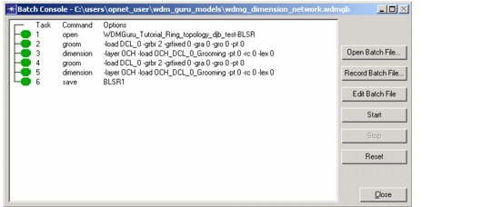

Batch Console > Batch Console Dialog Box
Batch Console Dialog Box
The Batch Console dialog box appears when you choose File > Batch Console from the main SP Guru Transport Planner window.
Figure 16-4 Batch Console Dialog Box

| Home © 1987-2007 OPNET Technologies, Inc. All Rights Reserved. This software may be covered by one or more U.S. Patents. See complete patent notice in the Legal Notices section. OPNET Support Center |